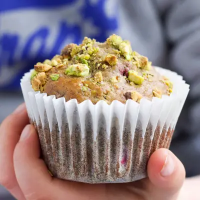

Pistachio Muffins

Ingredients
- 70g (½ cup) pistachios kernels
- 120g (1 cup) all purpose (plain) flour
- 40g (⅓ cup) wholewheat (wholemeal) flour
- 1 teaspoon Cinnamon
- 1 teaspoon Baking Soda
- 120ml (½ cup) milk
- 1½ teaspoon lemon juice
- 2 eggs
- 220g (1 cup) mashed banana
- 2 tablespoons honey (*SEE NOTE 1)
- 60ml (¼ cup) olive oil
- 1 teaspoon lemon zest
- 150g (1½ cups) frozen raspberries
- 35g (¼ cup) pistachio kernels
Steps
- Pre heat oven to 175C and line 12x muffin tray with muffin liners or spray with cooking spray.
- Add pistachios to a food processor or blender and blitz until a fine crumb/flour. Add to a mixing bowl along with the remaining dry ingredients. Mix and set aside.
- In a separate bowl add the milk and lemon juice. Allow to sit for 5 minutes and then add the remaining wet ingredients. Mix until combined.
- Add the remaining pistachios to a food processor and blitz until roughly chopped. (or chop on chopping board)
- Add the dry ingredients to the wet, reserving a tablespoon, and stir until just combined. (A few lumps are ok).
- Coat the raspberries in the reserved dry ingredient mixture and gently fold into the batter.
- Divide the batter evenly between the 12 muffin cups. Sprinkle the tops of the muffins with the chopped pistachios and bake for 23-25 mins, or until the muffins are golden on top and a toothpick inserted into a muffin comes out clean.
- Remove the muffins from the muffin tray and place on a cooling rack to cool.
Recipe by Healthy Little Foodies, from Healthy Little Foodies. Saved here for personal use; the original has the full notes, tips and photos. Open original